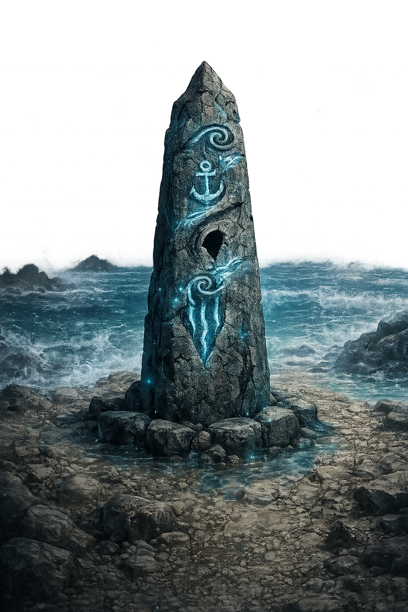
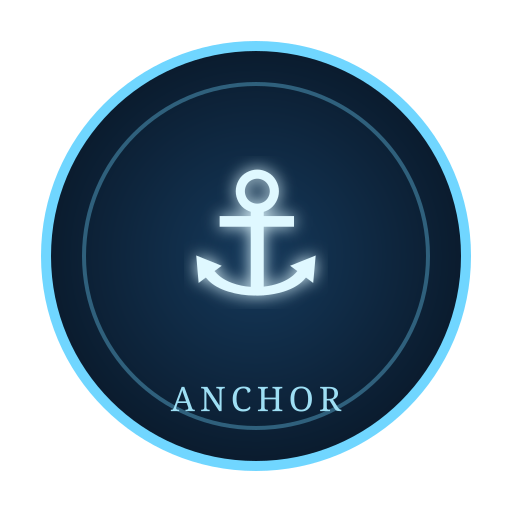
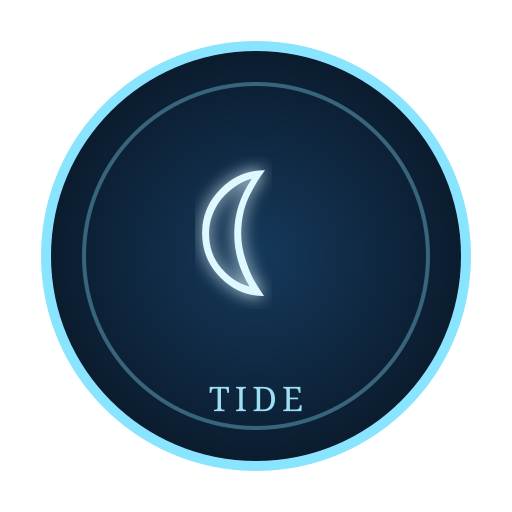

Inscription
“What the sea takes, it names first.
What is named, it carries.
What is carried, it returns.”
Rune Meanings
- ⚓ Anchor, that which holds
- ☾ Tide, that which moves
- ≈ Depth, that which waits below
Status
Awaiting the trial.
Press BEGIN to open the ritual instructions.



Restoration Pool
Drag a rune into the broken socket, or click one and then click the socket.
Ocean Cycle
⚓
→
☾
→
≈
The spiral repeats the same tide-memory, offset across each row.
Observed Spiral
⚓☾≈
☾≈⚓
≈⚓?
Trial Notes
A wrong activation unleashes a surge and resets the ritual. The missing rune matters.